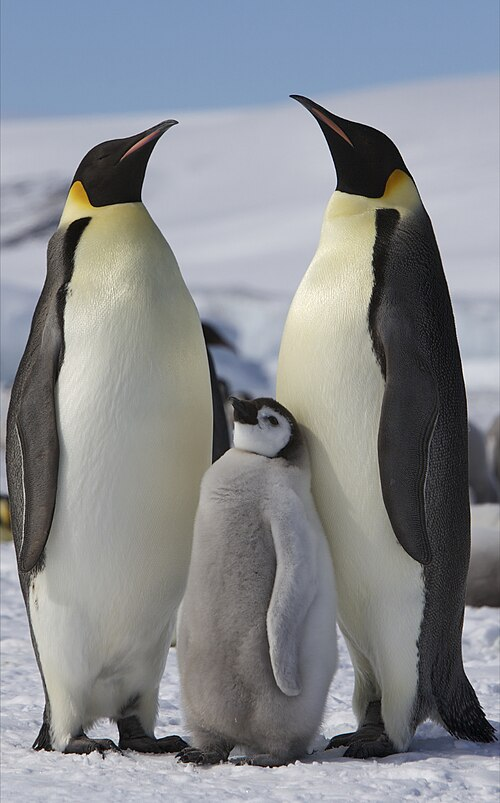

Guacamayo azulamarillo (Ara ararauna)
su habitat:Selvas húmedas y bosques tropicales de Sudamérica.
Alimentacion:Frugívora. Se alimenta de frutas, semillas, nueces y flores.
Dato curioso:Forma parejas para toda la vida y ayuda a dispersar semillas que regeneran los bosques.
Informacion general:Ave tropical grande, de plumaje azul intenso y amarillo brillante. Muy sociable e inteligente. Puede vivir más de 50 años.

Pingüino emperador (Aptenodytes forsteri)
su habitat:Costas heladas y mares fríos del continente antártico.
Alimentacion:Carnívoro. Se alimenta de peces, calamares y kril.
Dato curioso:Los machos incuban los huevos sosteniéndolos sobre sus patas bajo una bolsa de piel para protegerlos del frío mientras las hembras buscan alimento.
Informacion general: El más grande de los pingüinos. Vive en la Antártida y soporta temperaturas extremas. No vuela, pero es un excelente nadador.